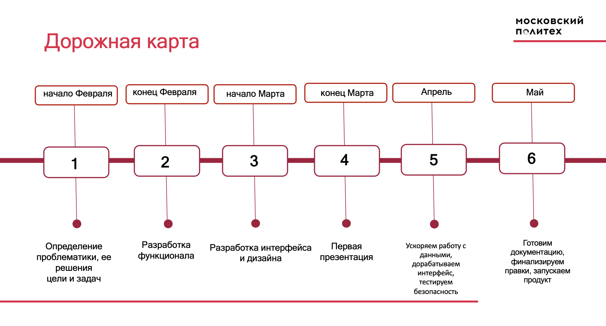
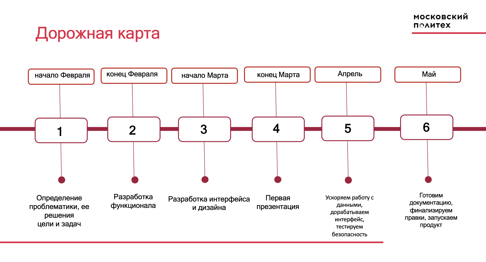
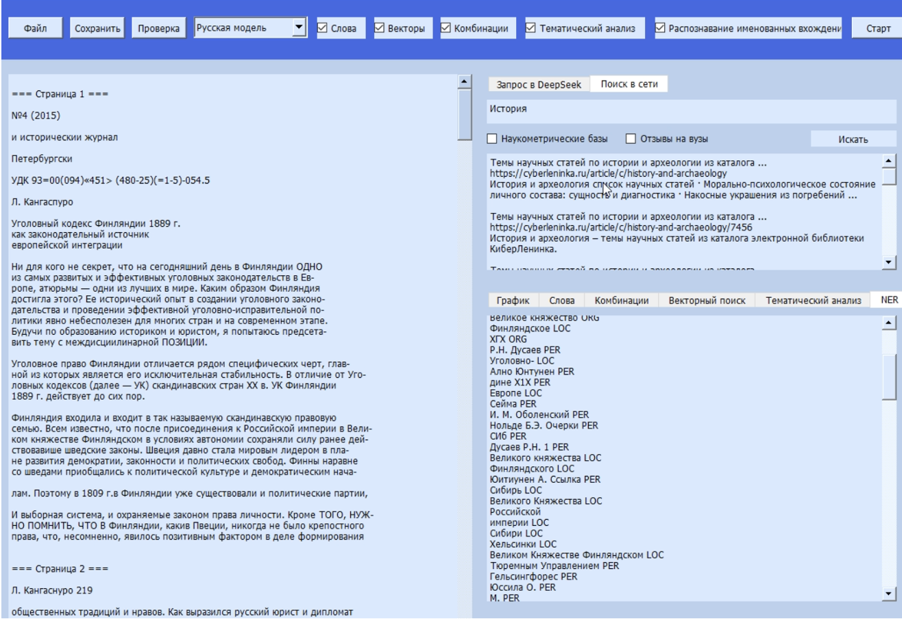

Февраль 2025 — Старт проекта
05.02.2025
Определены цели, задачи и проблематика. Сформирована команда, распределены роли, начата работа над техническим стеком.
05.02.2025
Определены цели, задачи и проблематика. Сформирована команда, распределены роли, начата работа над техническим стеком.
19.03.2025
Разработан первый прототип NLP-модуля, реализованы базовые функции анализа текста, подготовлен первый дизайн интерфейса.
21.05.2025
Проведено тестирование, внесены финальные корректировки, подготовлена документация и презентация, осуществлён официальный запуск продукта.